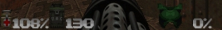
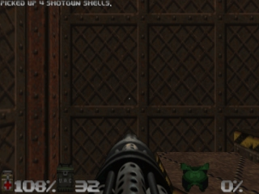
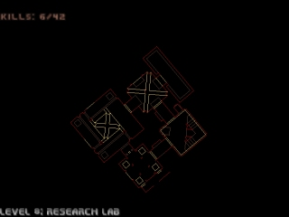

Status bar,
messages and maps.

At the bottom of the game screen, the follow status information is displayed from left to right:
Health
You start out at 100%, but you won't
stay there for long. At 0%, it's all over.
Ammo
The amount of amunition remaining for
your active weapon.
Keys
You can see any security cards or skull
keys you possess right here. There are three key colors: Red, Yellow, and
Blue
Armor
Your armor helps you out as long as
it lasts. Keep an eye on it, because when it goes, you might go too.
Messages

Often, you'll find yourself
running over various items and strange objects. The game tells you what
you're picking up by printing a message on-screen.
Automap

To help find your way around
Doom 64, You're equipped with an Automap device. By pressing the Map Button,
your normal view is replaced with a top-down view of everything you've
seen to date. The orange arrow represents your position AND points in the
direction you're looking. Pay Attention! The game is NOT paused, so you're
still vulnerable to attack while viewing the Automap.